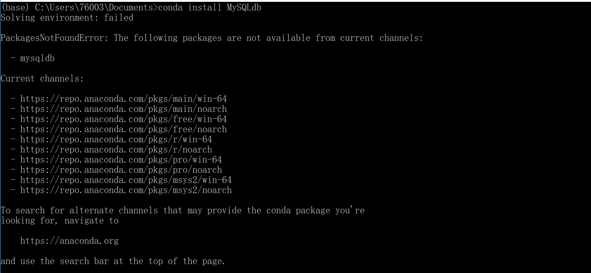

首先说明还有很多坑没解决，但是确实学到很多，所以先记录下来。
python与外部交互主要就是两大块建立连接 读和写 操作
操作txt 可以直接使用open函数，不详细介绍了。
1 2 3 4 5 6 7 8 9 10 11 12 13 14 15 16 17 18 19 20 21 22 23 24 25 import io class FiterDouble (object): @staticmethod def writeTxt(outputName,ls): file = open(outputName,'w') for i in range(500): file.write('%d ' % (i + 1)) pass file.close() pass @staticmethod def readTxt(inputName): file = open(inputName,'r') txt = file.read() ls = txt.split(" ") file.close() return ls pass pass if __name__=="__main__": ls=FiterDouble.readTxt("input.txt") FiterDouble.writeTxt("output.txt",ls) pass
基于panda的read_table()方法 官方文档
1 2 3 import pandas as pd p="C://Users/76003/Desktop/input.txt" data=pd.read_table(p)
返回的是dataframe类型
操作Excel 基于两个库分别介绍两种方法。
基于xlrd和xlwt库 xlrd用于读取和操作Excelopen_workbook()打开Excel文件sheets()[index]或者sheet_by_index(index)获取一个工作表nrows获取行数,ncols获取列数row_values(index)按行读取值,col_values(index)按列读取值cell(row,col).value某一个单元格的值ctype()查看字段类型
然后是xlwtWorkbook()创建一个工作空间add_sheet(name)添加一个表单write(i,j,value)向第i行j列插入valuesave(name)保存Excel
给大家一个Demo
1 2 3 4 5 6 7 8 9 10 11 12 13 14 15 #coding = utf-8 import xlrd import xlwt path = "C://Users/76003/Desktop/timu.xlsx" #打开文件 data=xlrd.open_workbook(path) #打开工作表 table=data.sheet_by_index(0) ls=[] for i in range(5): ls.append(table.row_values(i)) #提取前五行内容 data=xlwt.Workbook() tb=data.add_sheet('info') #添加一个新的表单info for i in range(5): for j in range(len(ls[0])): tb.write(i,j,ls[i][j]) #写入 data.save('excelFile.xls')
这里有很多坑
如果读入遇到空行好像无法直接判断。可能会出现数据错误。
解决办法:首先用ctype()判断类型，如果是日期型则做转换可以使用xlrd.xldate_as_tuple(table.cell(2,2).value, 0) #转化为元组形式也可以使用xlrd.xldate.xldate_as_datetime(table.cell(2,2).value, 1) #直接转化为datetime对象
使用xlwt库写入Excel时我插入旧表没有效果。(不知道是否能插入已有Excel中)，save()函数会生成一个新表保存到当前目录下。
基于panda库 panda库。哎 说了都是泪。panda是模仿R语言数据框dataframe创建的一个库，内容很丰富，功能很强大，但是也很多坑，各种数据不兼容。这里就不详细介绍了。
读入Excel 官方文档 read_excel()一行命令解决读入问题。方便强大，但是返回的一个<class 'pandas.core.frame.DataFrame'>,同样无法读取图片，但是可以完整的读取时间。
写入Excel 官方文档 DataFrame.to_excel()。同样一行命令，直接将一个数据框按照原有格式写入Excel
下面给一个Demo
1 2 3 4 5 6 7 8 import pandas as pd path = "C://Users/76003/Desktop/timu.xlsx" data=pd.read_excel(path) print(data) print(type(data)) writer = pd.ExcelWriter('output.xlsx') data.to_excel(writer,'Sheet1') writer.save()
同样简单的说一下坑
无法写入已有Excel表中，如果名字相同会直接覆盖。
操作Mysql 基于panda库 首先需要借用pymysql库中的connect()方法建立数据库连接。
从mysql读取数据read_sql() 官方文档
Demo
1 2 3 4 5 6 7 8 9 10 11 12 #coding = utf-8 import pandas as pd import pymysql # 1.打开数据库连接 con = pymysql.connect(host="localhost", user='root', passwd='123456', db='oo', charset='utf8') # 2.查询语句 sql = 'select * from t_department limit ' + str(5) # 3.读取数据 result = pd.read_sql(sql, con) # 4.关闭数据库连接 con.close() print(result)
panda库中同样有写入数据库的方法DataFrame.to_sql，但是我试了很多次都没有成功，因为它这个方法中的con参数需要一个engine。但是它只支持sqlite3的connect()和sqlalchemy的create_engine()。而它依赖于mysqldb库，mysqldb库现在不支持现在的版本。

基于pymysql库 简单介绍一下pymysql常见用法。
pymysql.Connect()参数说明
connection对象支持的方法
cursor对象支持的方法
其实调用pymysql库就可以在python上写sql命令。等同于在数据库上操作一样，但同时会返回数据到python上。
Demo
1 2 3 4 5 6 7 8 9 10 11 12 13 14 15 16 17 18 19 20 21 22 23 24 25 26 27 28 29 30 31 32 33 34 35 36 37 38 39 40 41 42 43 44 45 46 47 48 49 50 51 52 53 54 55 56 57 58 59 60 import numpy as np import pandas as pd import pymysql class ImportData(object): def importMysqlData_1(self, topn): # 1.打开数据库连接 con = pymysql.connect(host="localhost", user='root', passwd='123456', db='oo', charset='utf8') # 2.查询语句 sql = 'select * from sales limit ' + str(topn) # 3.读取数据 result = pd.read_sql(sql, con) # 4.关闭数据库连接 con.close() return result pass def output(self, data): # 1.打开数据库连接 con = pymysql.connect(host="localhost", user='root', passwd='123456', db='oo', charset='utf8') # 2.创建游标 cursor = con.cursor() cursor.execute("DROP TABLE IF EXISTS python") sql = """CREATE TABLE python ( stor_id VARCHAR(20) NOT NULL, ord_num VARCHAR(20) PRIMARY KEY , ord_date DATETIME, qty INT, payterms VARCHAR(20), title_id VARCHAR(20) )""" #执行创建表 cursor.execute(sql) sql2 = """INSERT INTO python(stor_id,ord_num,ord_date,qty,payterms,title_id) VALUES('%s','%s','%s','%s','%s','%s')""" # 执行sql语句 for i in range(5): cursor.execute(sql2%data[i]) # 提交到数据库执行 con.commit() cursor.close() con.close() print("is ok!") pass if __name__ == "__main__": ipa = ImportData() # 导入MySql数据库数据 data=ipa.importMysqlData_1(5) print(data) len = data.shape print(len) y=[] x=np.array(data) #数据框转换成List需要先转换成矩阵 y=x.tolist() #将时间戳转换字符串 for i in range(len[0]): y[i][2]=y[i][2].strftime('%Y-%m-%d %H:%M:%S') print(y) #字符串格式化需要元组 for i in range(5): y[i]=tuple(y[i]) y=tuple(y) ipa.output(y) pass
我在上面的例子中使用了panda的read_sql()方法读取数据，将数据格式先转换成列表，然后转换成元组(字符串格式化只能使用元组或者字典)，用pymysql的execute()执行INSECT插入命令。将从数据库提取的数据重新写入数据库。
注：读取数据可以直接使用execute()命令，这样得到的数据就不需要格式转换了。
另外strftime('%Y-%m-%d %H:%M:%S')方法可以将时间戳timestamp转换成字符串。